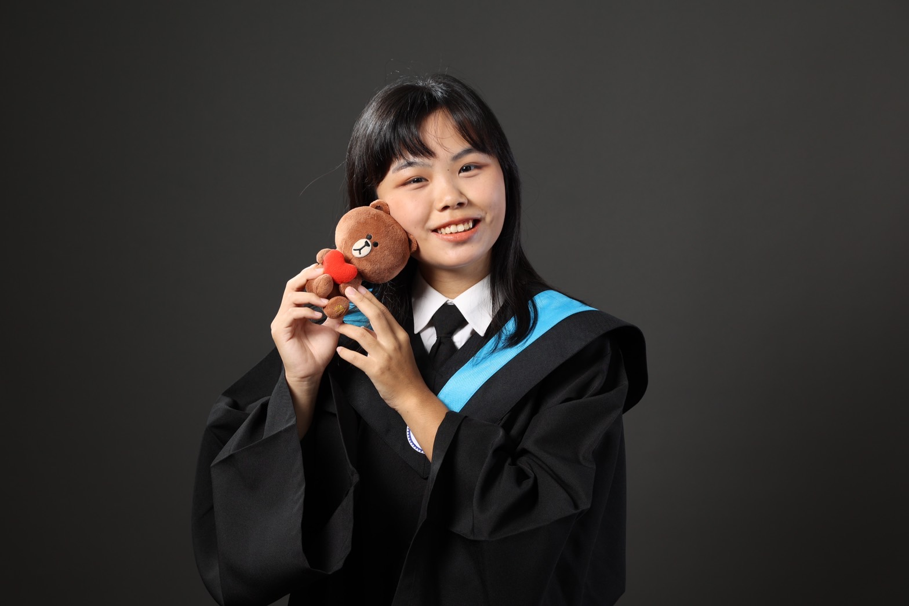

i

MY PROFILE
姓名 : 林思圻
學號 : 109704020
社團經歷
大一進入了交大學生聯合會擔任行銷部員，協助許多學校大型活動的進行，以及全校性活動海報設計。大二時擔任交大工管營總召，辦理了為期四天的營隊活動，而在大三作為系上系學會副會長，規劃了許多歷屆活動與學生空間改造計畫、舉辦小畢典。因為熱愛運動，從大一開始就加入了兩種球類系隊，實力不僅逐漸精進也取得不錯的成績，更從參加系隊練習與比賽的過程中認識更多不同系的同學，互相切磋砥礪。在大三時擔任工工系女排隊長，帶領球隊變得更有向心力以及發揮領導能力。獲獎經歷為2022
高科大工盃女排子排球項目冠軍，以及2022與2021
年兩屆交大系際盃女排冠軍。